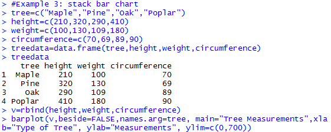

Learning Objective Three: Construct Stacked Bar Charts
Introduction
Stacked bar chart shows several measurements for one individual. A stacked bar has several layers, with each layer representing one variable. A stacked bar is used to represent more than one variables for each category.
Knowledge
The R function is the same as the barplot function, with the argument beside=FALSE. The R function is
barplot(x, width=1, space=NULL, names.arg=NULL, legend.text=NULL, beside=FALSE, horiz=FALSE, density=NULL, angle=45, col=NULL, border=par(“fg”), main=NULL, xlab=NULL, ylab=NULL, xlim=NULL, ylim=NULL, inside=TRUE)
The arguments were introduced in the previous learning objective (learning objective two).
Key Points to Remember
A stacked bar plot shows measurements of multiple variables for each individual (or category). When plotting the stacked bar, we still need to use ylim=c(0, ) to make the y-axis start from 0. The R function is barplot() with the argument beside=FALSE.
Practice and Reflection
Practice
Example 3: The following data listed the height (in cm.), weight (in lb.), and circumference (in cm.) of three types of trees. Use stack bar to represent each type of tree.
| Tree | Height (cm) | Weight (lb) | Circumference (cm) |
|---|---|---|---|
| Maple | 210 | 100 | 70 |
| Pine | 320 | 130 | 69 |
| Oak | 290 | 109 | 89 |
| Poplar | 410 | 180 | 90 |
The R code is

The bar chart is shown in figure 4 below

Figure 4. The stacked bar plot of trees’ height, weight and circumference. The x-axis shows the four types of trees. The y-axis shows the measurements of height (black), weight (grey), and circumference (light grey).
Reflection Activity 3: The data below recorded five samples and the two values associated with each sample. Make a stacked bar plot to show the data.
| Sample | Value1 | Value2 |
|---|---|---|
| A | 3 | 1 |
| B | 2 | 0 |
| C | 6 | 5 |
| D | 7 | 2 |
| E | 3 | 2 |
Assessment
We are interested in investigating the percentage of children who have been immunized and the corresponding mortality rate for children under five in a country. The table listed the data of the percentage of immunized children and the mortality rate for a randomly chosen 9 countries.
| Country | Percentage immunized | Mortality rate per 1000 births |
|---|---|---|
| Bolivia | 77 | 118 |
| Cambodia | 32 | 184 |
| China | 94 | 43 |
| Czech Republic | 99 | 12 |
| Egypt | 89 | 55 |
| Ethiopia | 13 | 208 |
| Mexico | 91 | 33 |
| Senegal | 47 | 145 |
| Turkey | 76 | 87 |
Generate a stacked bar plot to show the percentage immunized and mortality rate for each country; Title the graph as “immunization and mortality rate of nine countries”.